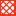

<!doctype html>
<html lang="en">
    <head>
        <meta charset="utf-8">
        <meta http-equiv="X-UA-Compatible" content="IE=edge">
        <meta name="viewport" content="initial-scale=1,user-scalable=no,maximum-scale=1,width=device-width">
        <meta name="mobile-web-app-capable" content="yes">
        <meta name="apple-mobile-web-app-capable" content="yes">
        <link rel="stylesheet" href="css/leaflet.css">
        <link rel="stylesheet" href="css/qgis2web.css"><link rel="stylesheet" href="css/fontawesome-all.min.css">
        <link rel="stylesheet" href="css/leaflet-control-geocoder.Geocoder.css">
        <style>
        #map {
            width: 97%;
            height: 97%;
        }
        </style>
        <title></title>
    </head>
    <body>
        <div id="map" style="position: fixed !important;">
        </div>
        <script src="js/qgis2web_expressions.js"></script>
        <script src="js/leaflet.js"></script>
        <script src="js/multi-style-layer.js"></script>
        <script src="js/leaflet.rotatedMarker.js"></script>
        <script src="js/leaflet.pattern.js"></script>
        <script src="js/leaflet-hash.js"></script>
        <script src="js/Autolinker.min.js"></script>
        <script src="js/rbush.min.js"></script>
        <script src="js/labelgun.min.js"></script>
        <script src="js/labels.js"></script>
        <script src="js/leaflet-control-geocoder.Geocoder.js"></script>
        <script src="data/Regions_5.js"></script>
        <script src="data/Cities_6.js"></script>
        <script src="data/NPPs_7.js"></script>
        <script>
        var highlightLayer;
        function highlightFeature(e) {
            highlightLayer = e.target;

            if (e.target.feature.geometry.type === 'LineString') {
              highlightLayer.setStyle({
                color: '#ffff00',
              });
            } else {
              highlightLayer.setStyle({
                fillColor: '#ffff00',
                fillOpacity: 1
              });
            }
            highlightLayer.openPopup();
        }
        var map = L.map('map', {
            zoomControl:true, maxZoom:28, minZoom:1
        }).fitBounds([[46.506599720374574,25.73743866109269],[51.90992486212798,35.89649939201174]]);
        var hash = new L.Hash(map);
        map.attributionControl.setPrefix('<a href="https://github.com/tomchadwin/qgis2web" target="_blank">qgis2web</a> &middot; <a href="https://leafletjs.com" title="A JS library for interactive maps">Leaflet</a> &middot; <a href="https://qgis.org">QGIS</a>');
        var autolinker = new Autolinker({truncate: {length: 30, location: 'smart'}});
        var bounds_group = new L.featureGroup([]);
        function setBounds() {
        }
        map.createPane('pane_Organic_0');
        map.getPane('pane_Organic_0').style.zIndex = 400;
        var img_Organic_0 = 'data/Organic_0.png';
        var img_bounds_Organic_0 = [[44.192805449453225,21.717245045776423],[52.346997740379045,40.343305403245296]];
        var layer_Organic_0 = new L.imageOverlay(img_Organic_0,
                                              img_bounds_Organic_0,
                                              {pane: 'pane_Organic_0'});
        bounds_group.addLayer(layer_Organic_0);
        map.addLayer(layer_Organic_0);
        map.createPane('pane_Clay_1');
        map.getPane('pane_Clay_1').style.zIndex = 401;
        var img_Clay_1 = 'data/Clay_1.png';
        var img_bounds_Clay_1 = [[44.23289451431574,21.331903153198873],[52.38046266639553,40.6861302326224]];
        var layer_Clay_1 = new L.imageOverlay(img_Clay_1,
                                              img_bounds_Clay_1,
                                              {pane: 'pane_Clay_1'});
        bounds_group.addLayer(layer_Clay_1);
        map.addLayer(layer_Clay_1);
        map.createPane('pane_Loam_2');
        map.getPane('pane_Loam_2').style.zIndex = 402;
        var img_Loam_2 = 'data/Loam_2.png';
        var img_bounds_Loam_2 = [[43.957661174637515,21.353475073569776],[52.376850750295276,40.665938167618386]];
        var layer_Loam_2 = new L.imageOverlay(img_Loam_2,
                                              img_bounds_Loam_2,
                                              {pane: 'pane_Loam_2'});
        bounds_group.addLayer(layer_Loam_2);
        map.addLayer(layer_Loam_2);
        map.createPane('pane_Sand_3');
        map.getPane('pane_Sand_3').style.zIndex = 403;
        var img_Sand_3 = 'data/Sand_3.png';
        var img_bounds_Sand_3 = [[44.04614626874889,21.339676389530357],[52.36713256179455,40.560815187372896]];
        var layer_Sand_3 = new L.imageOverlay(img_Sand_3,
                                              img_bounds_Sand_3,
                                              {pane: 'pane_Sand_3'});
        bounds_group.addLayer(layer_Sand_3);
        map.addLayer(layer_Sand_3);
        map.createPane('pane_Forestmask_4');
        map.getPane('pane_Forestmask_4').style.zIndex = 404;
        var img_Forestmask_4 = 'data/Forestmask_4.png';
        var img_bounds_Forestmask_4 = [[44.38803400038802,22.142086887610745],[52.374273262148044,40.217293532753835]];
        var layer_Forestmask_4 = new L.imageOverlay(img_Forestmask_4,
                                              img_bounds_Forestmask_4,
                                              {pane: 'pane_Forestmask_4'});
        bounds_group.addLayer(layer_Forestmask_4);
        map.addLayer(layer_Forestmask_4);
        function pop_Regions_5(feature, layer) {
            layer.on({
                mouseout: function(e) {
                    for (i in e.target._eventParents) {
                        e.target._eventParents[i].resetStyle(e.target);
                    }
                    if (typeof layer.closePopup == 'function') {
                        layer.closePopup();
                    } else {
                        layer.eachLayer(function(feature){
                            feature.closePopup()
                        });
                    }
                },
                mouseover: highlightFeature,
            });
            var popupContent = '<table>\
                    <tr>\
                        <td colspan="2">' + (feature.properties['Обл.'] !== null ? autolinker.link(feature.properties['Обл.'].toLocaleString()) : '') + '</td>\
                    </tr>\
                </table>';
            layer.bindPopup(popupContent, {maxHeight: 400});
        }

        function style_Regions_5_0() {
            return {
                pane: 'pane_Regions_5',
                opacity: 1,
                color: 'rgba(228,26,28,1.0)',
                dashArray: '1,5',
                lineCap: 'square',
                lineJoin: 'bevel',
                weight: 3.0,
                fillOpacity: 0,
                interactive: true,
            }
        }
        map.createPane('pane_Regions_5');
        map.getPane('pane_Regions_5').style.zIndex = 405;
        map.getPane('pane_Regions_5').style['mix-blend-mode'] = 'normal';
        var layer_Regions_5 = new L.geoJson(json_Regions_5, {
            attribution: '',
            interactive: true,
            dataVar: 'json_Regions_5',
            layerName: 'layer_Regions_5',
            pane: 'pane_Regions_5',
            onEachFeature: pop_Regions_5,
            style: style_Regions_5_0,
        });
        bounds_group.addLayer(layer_Regions_5);
        map.addLayer(layer_Regions_5);
        function pop_Cities_6(feature, layer) {
            layer.on({
                mouseout: function(e) {
                    for (i in e.target._eventParents) {
                        e.target._eventParents[i].resetStyle(e.target);
                    }
                    if (typeof layer.closePopup == 'function') {
                        layer.closePopup();
                    } else {
                        layer.eachLayer(function(feature){
                            feature.closePopup()
                        });
                    }
                },
                mouseover: highlightFeature,
            });
            var popupContent = '<table>\
                    <tr>\
                        <td colspan="2">' + (feature.properties['Місто'] !== null ? autolinker.link(feature.properties['Місто'].toLocaleString()) : '') + '</td>\
                    </tr>\
                </table>';
            layer.bindPopup(popupContent, {maxHeight: 400});
        }

        var pattern_Cities_6_0 = new L.StripePattern({
            weight: 0.3,
            spaceWeight: 1.2,
            color: '#f92408',
            opacity: 1.0,
            spaceOpacity: 0,
            angle: 315
        });
        pattern_Cities_6_0.addTo(map);
        function style_Cities_6_0() {
            return {
                pane: 'pane_Cities_6',
                stroke: false,
                fillOpacity: 1,
                fillPattern: pattern_Cities_6_0,
                interactive: true,
            }
        }
        var pattern_Cities_6_1 = new L.StripePattern({
            weight: 0.3,
            spaceWeight: 1.2,
            color: '#f92408',
            opacity: 1.0,
            spaceOpacity: 0,
            angle: 225
        });
        pattern_Cities_6_1.addTo(map);
        function style_Cities_6_1() {
            return {
                pane: 'pane_Cities_6',
                stroke: false,
                fillOpacity: 1,
                fillPattern: pattern_Cities_6_1,
                interactive: true,
            }
        }
        function style_Cities_6_2() {
            return {
                pane: 'pane_Cities_6',
                opacity: 1,
                color: 'rgba(249,36,8,1.0)',
                dashArray: '',
                lineCap: 'square',
                lineJoin: 'bevel',
                weight: 2.0,
                fillOpacity: 0,
                interactive: true,
            }
        }
        map.createPane('pane_Cities_6');
        map.getPane('pane_Cities_6').style.zIndex = 406;
        map.getPane('pane_Cities_6').style['mix-blend-mode'] = 'normal';
        var layer_Cities_6 = new L.geoJson.multiStyle(json_Cities_6, {
            attribution: '',
            interactive: true,
            dataVar: 'json_Cities_6',
            layerName: 'layer_Cities_6',
            pane: 'pane_Cities_6',
            onEachFeature: pop_Cities_6,
            styles: [style_Cities_6_0,style_Cities_6_1,style_Cities_6_2,]
        });
        bounds_group.addLayer(layer_Cities_6);
        map.addLayer(layer_Cities_6);
        function pop_NPPs_7(feature, layer) {
            layer.on({
                mouseout: function(e) {
                    for (i in e.target._eventParents) {
                        e.target._eventParents[i].resetStyle(e.target);
                    }
                    if (typeof layer.closePopup == 'function') {
                        layer.closePopup();
                    } else {
                        layer.eachLayer(function(feature){
                            feature.closePopup()
                        });
                    }
                },
                mouseover: highlightFeature,
            });
            var popupContent = '<table>\
                    <tr>\
                        <td colspan="2">' + (feature.properties['Назва'] !== null ? autolinker.link(feature.properties['Назва'].toLocaleString()) : '') + '</td>\
                    </tr>\
                </table>';
            layer.bindPopup(popupContent, {maxHeight: 400});
        }

        function style_NPPs_7_0() {
            return {
                pane: 'pane_NPPs_7',
        rotationAngle: 0.0,
        rotationOrigin: 'center center',
        icon: L.icon({
            iconUrl: 'markers/IncessantBlabber-Radioactive-symbol.svg',
            iconSize: [19.0, 19.0]
        }),
                interactive: true,
            }
        }
        map.createPane('pane_NPPs_7');
        map.getPane('pane_NPPs_7').style.zIndex = 407;
        map.getPane('pane_NPPs_7').style['mix-blend-mode'] = 'normal';
        var layer_NPPs_7 = new L.geoJson(json_NPPs_7, {
            attribution: '',
            interactive: true,
            dataVar: 'json_NPPs_7',
            layerName: 'layer_NPPs_7',
            pane: 'pane_NPPs_7',
            onEachFeature: pop_NPPs_7,
            pointToLayer: function (feature, latlng) {
                var context = {
                    feature: feature,
                    variables: {}
                };
                return L.marker(latlng, style_NPPs_7_0(feature));
            },
        });
        bounds_group.addLayer(layer_NPPs_7);
        map.addLayer(layer_NPPs_7);
        var osmGeocoder = new L.Control.Geocoder({
            collapsed: true,
            position: 'topleft',
            text: 'Search',
            title: 'Testing'
        }).addTo(map);
        document.getElementsByClassName('leaflet-control-geocoder-icon')[0]
        .className += ' fa fa-search';
        document.getElementsByClassName('leaflet-control-geocoder-icon')[0]
        .title += 'Search for a place';
        var baseMaps = {};
        L.control.layers(baseMaps,{' NPPs': layer_NPPs_7,' Cities': layer_Cities_6,' Regions': layer_Regions_5,' Forest mask': layer_Forestmask_4,' Sand': layer_Sand_3,' Loam': layer_Loam_2,' Clay': layer_Clay_1,' Organic': layer_Organic_0,}).addTo(map);
        setBounds();
        L.ImageOverlay.include({
            getBounds: function () {
                return this._bounds;
            }
        });
        resetLabels([layer_Cities_6,layer_NPPs_7]);
        map.on("zoomend", function(){
            resetLabels([layer_Cities_6,layer_NPPs_7]);
        });
        map.on("layeradd", function(){
            resetLabels([layer_Cities_6,layer_NPPs_7]);
        });
        map.on("layerremove", function(){
            resetLabels([layer_Cities_6,layer_NPPs_7]);
        });
        </script>
    </body>
</html>
